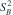
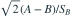
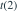
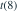
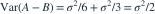
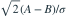
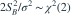

9 个独立观测来自  。前 6 个观测的均值记为 A，后 3 个观测的均值和无偏样本方差记为 B、
。前 6 个观测的均值记为 A，后 3 个观测的均值和无偏样本方差记为 B、
。前 6 个观测的均值记为 A，后 3 个观测的均值和无偏样本方差记为 B、
。统计量
服从哪种分布？- A

- B

- C
- D
我已思考，展开答案与解析
正确答案：A
- A 与后 3 个观测独立，且

，所以
为标准正态。 - 后 3 个正态观测的均值 B 与样本方差独立，A 也与该方差独立，因此分子与 独立。
- 又

，所给比值正是 t(2) 的构造式。
易错提醒分母方差只用了后 3 个观测，因此自由度是 2，不是 8。
南审 813 · 2025 · 四·2，PDF第2页
从大题拆分考点并重新编写选项；数值或设问有调整。
查看参考来源